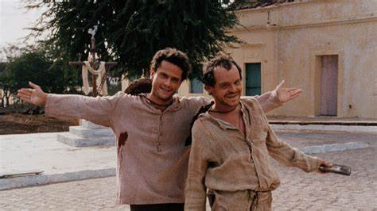

One Piece
Gosto 5/5
One Piece é um anime sobre um pirata que estica depois de chupar uma manga no Cais de Santa Rita
Conheça mais sobre One Piece: Leia +
The Chosen
Gosto 5/5
The Chosen é uma série bíblica que retrata a história de Jesus sob o ponto de vista dos seus discípulos.
O Auto da Compadecida
Gosto 5/5

O Auto da Compadecida é uma minisérie/filme baseado num filme sobre dois homens pobres que vivem no sertão tentando sobreviver de truques e golpes.
The Big Bang Theory
Gosto 3.5/5